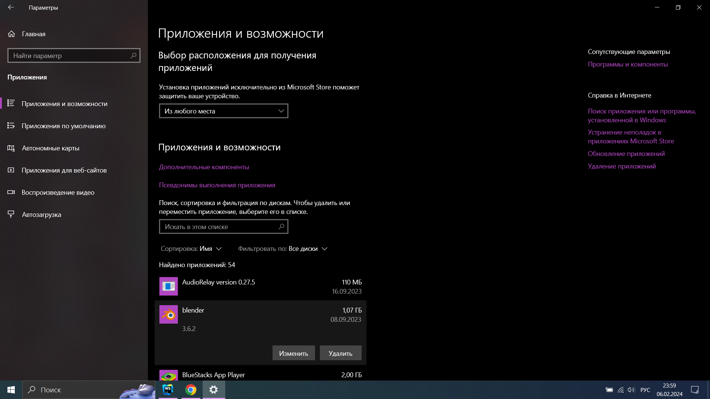

Удаление приложений
В предыдущем уроке вы научились скачивать, но как помните у скачивания есть один минус. Нельзя скачивать много приложений.
Так как память на вашем пк или ноутбуке не резиновая, то надо уметь ее подчищать.
Научимся удалять ненужные приложения.
- Зайдите в Этот компьютер на рабочем столе.
- Выберите вкладку загрузки
- Здесь можно увидеть, все что вы когда либо скачивали.
- Выделите ненужные файлы, зажав левую кнопку мышки.
- Один раз нажмите правой кнопкой мыши, на выделенную область.
- Выбираем из списка Удалить.
- Мы можем заметить что они исчезли, но на самом деле это не так.
- Корзина очищается через определенное время.Но вы можете сами удалить то, что считаете точно уже не пригодится.
- Но и это еще не все!


Все удаленные файлы, отправляются в корзину.
Она находится на рабочем столе и служит спасательным кругом, если вы случайно удалили не
то что надо.
Надо удалить приложение через систему поиска
- В поиске, вводим: удаление и нажимаем Enter
- Нажмите на приложение которое хочете убрать и выберите удалить. 